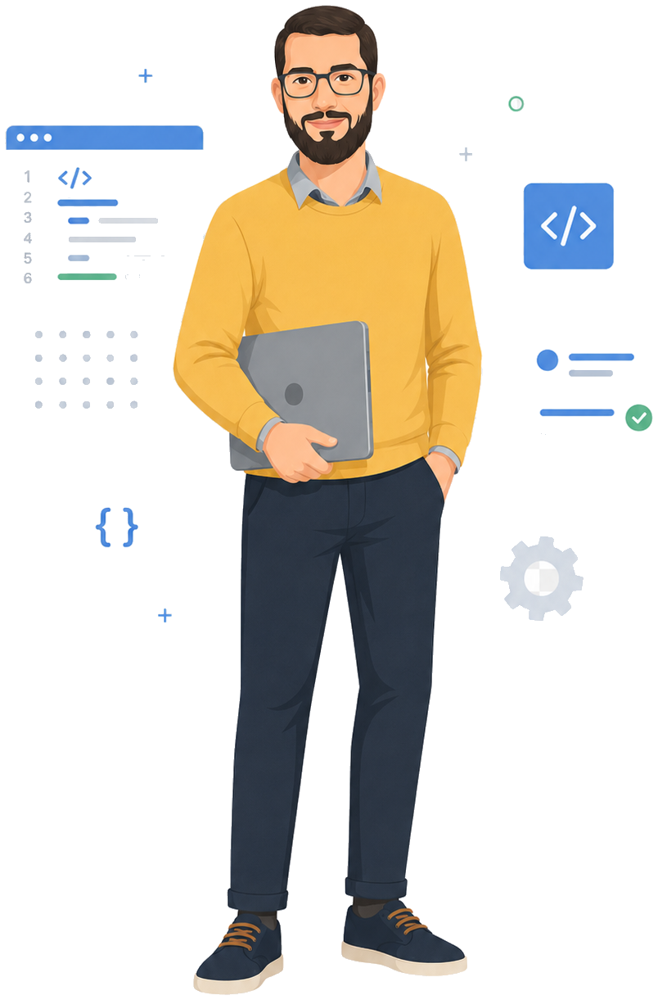

Asset Registry
A single source of truth for equipment, location, history, documents, and condition.
A plant-wide maintenance system that turns assets, preventive schedules, breakdowns, workforce execution, reports, and executive KPIs into one clear operating picture.

Every feature is tied to an operational outcome: less disruption, faster response, stronger control, and better decisions.
A worker reports an issue or the system identifies a due maintenance task.
Work is prioritized and assigned to internal or external maintenance resources.
Actions, findings, parts, time, downtime, and completion are permanently documented.
Management sees trends, bottlenecks, reliability KPIs, and the next priorities.
A single source of truth for equipment, location, history, documents, and condition.
Recurring schedules, due-status escalation, checklists, and automatic re-arming.
Structured repair workflow from reported fault to assignment, completion, and report.
Track assigned, overdue, due-soon, and completed tasks for internal and external workers.
In-app, email, mobile push, and SMS notifications for employees and contractors.
PM compliance, MTBF, MTTR, downtime, backlog, emergency work, and asset health.
Pick a part of the operation, then drag the line to compare the day-to-day before a system like this, and after it's running.


See plant readiness, overdue work, downtime, work-order status, section performance, and the assets that require attention now.

Balance assignments, identify bottlenecks early, and recognize high-performing teams using transparent operational data.

Pick a module to preview the screen.



Professional experience designing dependable business systems that convert complex operations into clear, secure, and scalable digital workflows.
Hands-on leadership in planning and executing maintenance work across demanding industrial and facility environments.
Load the first equipment set, activate maintenance schedules, measure the results, then expand with confidence across the plant.
Request the pilot phase